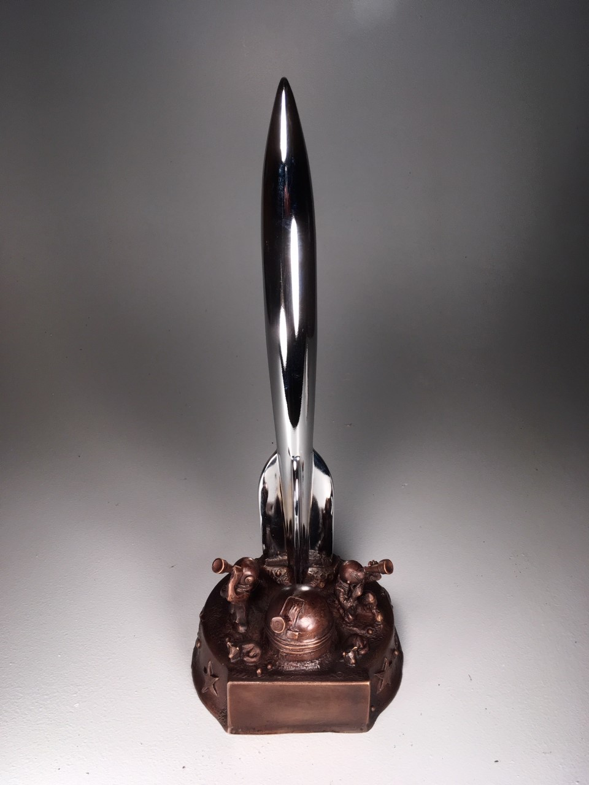

Presented at: Worldcon 76, San José, California, USA, August 19, 2018
Host: John Picacio
Base design: Sara Felix and Vincent Villafranca
Awards Administration: Dave McCarty, Linda Deneroff, Deb Geisler, Susan de Guardiola, Sandra Levy, John Pomeranz, Kevin Roche, Kevin Standlee, Leane Verhulst
The winners of the 2018 Hugo Awards, the WSFS Award for Best Young Adult Book (which, effective in 2019, will be called the Lodestar Award), and the John W. Campbell Award for Best New Writer were announced at Worldcon 76 in San José, California on August 19, 2018.
1,813 valid nominating ballots (1,795 electronic and 18 paper) were received and counted from the members of Worldcon 75, Worldcon 76, and Dublin 2019. 2,828 valid final ballots (2,810 electronic and 18 paper) were received from the members of Worldcon 76.
Full Nominating and Final Ballot Voting Details (PDF)
Video of the 2018 Hugo Awards Ceremony (not including video clips due to copyright-clearance issues), sponsored by Google, is available on the YouTube Worldcon Events channel. Our thanks to Syd Weinstein for making this recording available.
Live text-based coverage of the ceremony on CoverItLive was sponsored in part by a grant from the Utah Fandom Organization/SpikeCon (2019 NASFiC/Westercon 72/1632 Minicon).
Best Novel
- The Stone Sky, by N.K. Jemisin (Orbit)
- The Collapsing Empire, by John Scalzi (Tor)
- Provenance, by Ann Leckie (Orbit)
- Six Wakes, by Mur Lafferty (Orbit)
- Raven Stratagem, by Yoon Ha Lee (Solaris)
- New York 2140, by Kim Stanley Robinson (Orbit)
Best Novella
- All Systems Red, by Martha Wells (Tor.com Publishing)
- “And Then There Were (N-One),” by Sarah Pinsker (Uncanny, March/April 2017)
- Down Among the Sticks and Bones, by Seanan McGuire (Tor.Com Publishing)
- Binti: Home, by Nnedi Okorafor (Tor.com Publishing)
- The Black Tides of Heaven, by JY Yang (Tor.com Publishing)
- River of Teeth, by Sarah Gailey (Tor.com Publishing)
Best Novelette
- “The Secret Life of Bots,” by Suzanne Palmer (Clarkesworld, September 2017)
- “Wind Will Rove,” by Sarah Pinsker (Asimov’s, September/October 2017)
- “A Series of Steaks,” by Vina Jie-Min Prasad (Clarkesworld, January 2017)
- “Extracurricular Activities,” by Yoon Ha Lee (Tor.com, February 15, 2017)
- “Children of Thorns, Children of Water,” by Aliette de Bodard (Uncanny, July-August 2017)
- “Small Changes Over Long Periods of Time,” by K.M. Szpara (Uncanny, May/June 2017)
Best Short Story
- “Welcome to your Authentic Indian Experience™,” by Rebecca Roanhorse (Apex, August 2017)
- “Fandom for Robots,” by Vina Jie-Min Prasad (Uncanny, September/October 2017)
- “The Martian Obelisk,” by Linda Nagata (Tor.com, July 19, 2017)
- “Sun, Moon, Dust” by Ursula Vernon, (Uncanny, May/June 2017)
- “Carnival Nine,” by Caroline M. Yoachim (Beneath Ceaseless Skies, May 2017)
- “Clearly Lettered in a Mostly Steady Hand,” by Fran Wilde (Uncanny, September 2017)
Best Series
- World of the Five Gods, by Lois McMaster Bujold (Harper Voyager / Spectrum Literary Agency)
- InCryptid, by Seanan McGuire (DAW)
- The Memoirs of Lady Trent, by Marie Brennan (Tor US / Titan UK)
- The Books of the Raksura, by Martha Wells (Night Shade)
- The Stormlight Archive, by Brandon Sanderson (Tor US / Gollancz UK)
- The Divine Cities, by Robert Jackson Bennett (Broadway US / Jo Fletcher Books UK)
Best Related Work
- No Time to Spare: Thinking About What Matters, by Ursula K. Le Guin (Houghton Mifflin Harcourt)
- Crash Override: How Gamergate (Nearly) Destroyed My Life, and How We Can Win the Fight Against Online Hate, by Zoë Quinn (PublicAffairs)
- Luminescent Threads: Connections to Octavia E. Butler, edited by Alexandra Pierce, and Mimi Mondal (Twelfth Planet Press)
- Iain M. Banks (Modern Masters of Science Fiction), by Paul Kincaid (University of Illinois Press)
- Sleeping with Monsters: Readings and Reactions in Science Fiction and Fantasy, by Liz Bourke (Aqueduct Press)
- A Lit Fuse: The Provocative Life of Harlan Ellison, by Nat Segaloff (NESFA Press)
Best Graphic Story
- Monstress, Volume 2: The Blood, written by Marjorie M. Liu, illustrated by Sana Takeda (Image Comics)
- Saga, Volume 7, written by Brian K. Vaughan, illustrated by Fiona Staples (Image Comics)
- Bitch Planet, Volume 2: President Bitch, written by Kelly Sue DeConnick, illustrated by Valentine De Landro and Taki Soma, colored by Kelly Fitzpatrick, lettered by Clayton Cowles (Image Comics)
- Black Bolt, Volume 1: Hard Time, written by Saladin Ahmed, illustrated by Christian Ward, lettered by Clayton Cowles (Marvel)
- Paper Girls, Volume 3, written by Brian K. Vaughan, illustrated by Cliff Chiang, colored by Matthew Wilson, lettered by Jared Fletcher (Image Comics)
- My Favorite Thing is Monsters, written and illustrated by Emil Ferris (Fantagraphics)
Best Dramatic Presentation, Long Form
- Wonder Woman, screenplay by Allan Heinberg, story by Zack Snyder & Allan Heinberg and Jason Fuchs, directed by Patty Jenkins (DC Films / Warner Brothers)
- Get Out, written and directed by Jordan Peele (Blumhouse Productions / Monkeypaw Productions / QC Entertainment)
- Thor: Ragnarok, written by Eric Pearson, Craig Kyle, and Christopher Yost; directed by Taika Waititi (Marvel Studios)
- Star Wars: The Last Jedi, written and directed by Rian Johnson (Lucasfilm, Ltd.)
- The Shape of Water, written by Guillermo del Toro and Vanessa Taylor, directed by Guillermo del Toro (TSG Entertainment / Double Dare You / Fox Searchlight Pictures)
- Blade Runner 2049, written by Hampton Fancher and Michael Green, directed by Denis Villeneuve (Alcon Entertainment / Bud Yorkin Productions / Torridon Films / Columbia Pictures)
Best Dramatic Presentation, Short Form
- The Good Place: “The Trolley Problem,” written by Josh Siegal and Dylan Morgan, directed by Dean Holland (Fremulon / 3 Arts Entertainment / Universal Television)
- Black Mirror: “USS Callister,” written by William Bridges and Charlie Brooker, directed by Toby Haynes (House of Tomorrow)
- The Good Place: “Michael’s Gambit,” written and directed by Michael Schur (Fremulon / 3 Arts Entertainment / Universal Television)
- Doctor Who: “Twice Upon a Time,” written by Steven Moffat, directed by Rachel Talalay (BBC Cymru Wales)
- Star Trek: Discovery: “Magic to Make the Sanest Man Go Mad,” written by Aron Eli Coleite & Jesse Alexander, directed by David M. Barrett (CBS Television Studios)
- “The Deep” [song], by Clipping (Daveed Diggs, William Hutson, Jonathan Snipes)
Best Editor, Short Form
- Lynne M. Thomas & Michael Damian Thomas
- Sheila Williams
- Neil Clarke
- John Joseph Adams
- Jonathan Strahan
- Lee Harris
Best Editor, Long Form
- Sheila E. Gilbert
- Navah Wolfe
- Diana M. Pho
- Devi Pillai
- Miriam Weinberg
- Joe Monti
Best Professional Artist
- Sana Takeda
- John Picacio
- Galen Dara
- Victo Ngai
- Kathleen Jennings
- Bastien Lecouffe Deharme
Best Semiprozine
- Uncanny Magazine, edited by Lynne M. Thomas & Michael Damian Thomas, Michi Trota, and Julia Rios; podcast produced by Erika Ensign & Steven Schapansky
- Strange Horizons, edited by Kate Dollarhyde, Gautam Bhatia, A.J. Odasso, Lila Garrott, Heather McDougal, Ciro Faienza, Tahlia Day, Vanessa Rose Phin, and the Strange Horizons staff
- Beneath Ceaseless Skies, editor-in-chief and publisher Scott H. Andrews
- Escape Pod, edited by Mur Lafferty, S.B. Divya, and Norm Sherman, with assistant editor Benjamin C. Kinney
- Fireside Magazine, edited by Brian White and Julia Rios; managing editor Elsa Sjunneson-Henry; special feature editor Mikki Kendall; publisher & art director Pablo Defendini
- The Book Smugglers, edited by Ana Grilo and Thea James
Best Fanzine
- File 770, edited by Mike Glyer
- SF Bluestocking, edited by Bridget McKinney
- nerds of a feather, flock together, edited by The G, Vance Kotrla, and Joe Sherry
- Journey Planet, edited by Team Journey Planet
- Galactic Journey, edited by Gideon Marcus
- Rocket Stack Rank, edited by Greg Hullender and Eric Wong
Best Fancast
- Ditch Diggers, presented by Mur Lafferty and Matt Wallace
- Fangirl Happy Hour, presented by Ana Grilo and Renay William
- The Coode Street Podcast, presented by Jonathan Strahan and Gary K. Wolfe
- Galactic Suburbia, presented by Alisa Krasnostein, Alexandra Pierce, and Tansy Rayner Roberts; produced by Andrew Finch
- Sword and Laser, presented by Veronica Belmont and Tom Merritt
- Verity!, presented by Deborah Stanish, Erika Ensign, Katrina Griffiths, L.M. Myles, Lynne M. Thomas, and Tansy Rayner Roberts
Best Fan Writer
- Sarah Gailey
- Foz Meadows
- Mike Glyer
- Bogi Takács
- Camestros Felapton
- Charles Payseur
Best Fan Artist
- Geneva Benton
- Likhain (M. Sereno)
- Grace P. Fong
- Maya Hahto
- Spring Schoenhuth
- Steve Stiles
There are two other Awards administered by Worldcon 76 that are not Hugo Awards:
Award for Best Young Adult Book
- Akata Warrior, by Nnedi Okorafor (Viking)
- Summer in Orcus, written by T. Kingfisher (Ursula Vernon), illustrated by Lauren Henderson (Sofawolf Press)
- In Other Lands, by Sarah Rees Brennan (Big Mouth House)
- A Skinful of Shadows, by Frances Hardinge (Macmillan UK / Harry N. Abrams US)
- The Art of Starving, by Sam J. Miller (HarperTeen)
- The Book of Dust: La Belle Sauvage, by Philip Pullman (Knopf)
John W. Campbell Award for Best New Writer
- Rebecca Roanhorse
- Vina Jie-Min Prasad
- Jeannette Ng
- Rivers Solomon
- Katherine Arden
- Sarah Kuhn*
*Finalist in their 2nd year of eligibility
Declined/Ineligible
The following nominees received enough votes to qualify for the final ballot, but either declined nomination or were found to be ineligible.
- Best Series: The Broken Earth (Declined), The Expanse, The Craft Sequence, October Daye (Not enough words published since last appearance in this category. The Administrators ruled that the Best Series category presented in 2017 as a special category was effectively the same category as this Best Series category, and therefore the rules for re-eligibility applied.)
- Best Editor, Long Form: Liz Gorinsky (Declined)
- Best Professional Artist: Julie Dillon (Declined)
- Best Fancast: Tea and Jeopardy (Declined)
The 2018 Hugo Awards are generally for work first published or appearing in 2017, or first published in the USA in 2017 (if previously published elsewhere), or first published in English in 2017 (if previously published in another language). The detailed rules are in Article 3 of the WSFS Constitution.